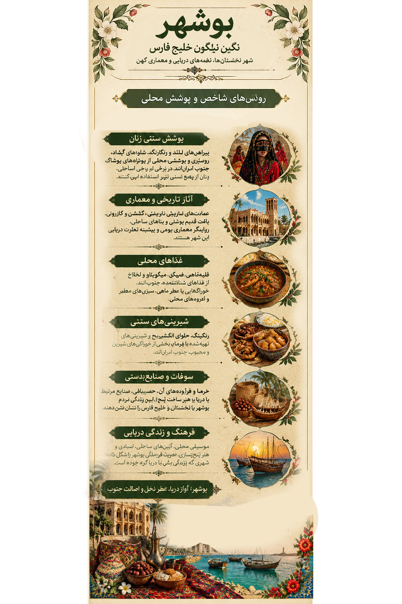

۱. بوشهر در هنر؛ روایت دریا و زندگی
1. Bushehr in Art: Stories of the Sea
در این اثر، پوشش رنگارنگ زن جنوب در کنار خانههای تاریخی، دریا، لنجهای چوبی، ماهیگیری و خوراکهای محلی قرار گرفته است. کلاژ تصویری، پیوند زندگی مردم ساحل با دریا، تجارت دریایی و خاطرههای فرهنگی جنوب ایران را روایت میکند.
This artwork places a southern woman's colorful dress alongside historic houses, the sea, wooden boats, fishing, and local food. The collage reflects coastal life, maritime trade, and the cultural memories of southern Iran.

اثر تصویری بوشهر از مجموعه «ایران، هزار رنگ»
The Bushehr artwork from “Iran, A Thousand Colors”
در بوشهر، دریا تنها یک چشمانداز نیست؛ بخشی از پوشش، خوراک، موسیقی و خاطرهی مردم است.
In Bushehr, the sea is more than a landscape; it is part of clothing, food, music, and collective memory.
این تصویر، اثر هنری مجموعه است؛ توضیحات صفحه برای معرفی فرهنگی و تاریخی منطقه ارائه شدهاند.
This is the original artwork in the collection. The text provides cultural and historical context about the region.
۲. پوشش زنان بوشهر؛ رنگ در آفتاب جنوب
2. Women's Dress in Bushehr: Colors of the Southern Sun
پوشش سنتی زنان استان بوشهر در همه مناطق یکسان نبوده است. نوع پارچه، رنگ، شیوهی پوشاندن سر و صورت و تزیین لباس، با توجه به محل زندگی، سنت خانوادگی، شرایط آبوهوایی و موقعیت استفاده تفاوت داشته است. به همین دلیل، برای نسبتدادن یک لباس مشخص به روستایی معین، باید به منابع مردمشناختی یا روایتهای معتبر محلی مراجعه کرد.
Traditional women's clothing in Bushehr has varied from one area to another. Fabric, color, head and face coverings, and decorative details have reflected local life, family traditions, climate, and occasion. Attributing a specific outfit to a particular village requires reliable ethnographic sources or local testimony.

لیبل اختصاصی بوشهر؛ راهنمای تصویری پوشش، تاریخ، خوراک و صنایعدستی
Bushehr exhibition label: a visual guide to dress, history, food, and handicrafts
لباسهای رنگارنگ محلیColorful Local Clothing
در برخی پوششهای محلی جنوب، پارچههای رنگی و نقشدار، لباسهای بلند و تزیینات دوخت دیده میشود. جزییات لباس در نواحی مختلف یکسان نیست.
Some southern dress traditions feature colorful patterned fabrics, long garments, and decorative stitching. Details vary across local communities.
برقع و پوشش سرBurqa and Head Coverings
برقع در بخشهایی از سواحل جنوبی ایران شناخته شده است؛ اما شکل، رنگ و میزان رواج آن از منطقهای به منطقه دیگر تفاوت دارد. نباید هر نوع برقع را بدون سند به تمام زنان بوشهر نسبت داد.
The burqa is known in parts of Iran's southern coast, but its form, color, and prevalence vary by locality. One style should not be attributed to all Bushehri women without evidence.
زیورآلات و تزییناتJewelry and Decoration
زیورآلات و تزیینات پارچهای میتوانند بخشی از جلوهی پوشاک محلی باشند. برای ثبت نوع و نام هر تزیین، بررسی نمونههای مستند اهمیت دارد.
Jewelry and textile embellishments may form part of local dress. Documented examples are important when identifying specific ornaments.
تنوع پوشش در نواحی ساحلیDress Across Coastal Areas
در معرفی پوشش زنان بندرها و آبادیهای ساحلی، تفاوتهای محلی باید حفظ شود. تا زمانی که منبع معتبری در دست نباشد، نام روستای لباس تصویرشده را قطعی نمیدانیم.
Local differences should be preserved when documenting women's dress in ports and coastal settlements. Without a reliable source, the village associated with the pictured outfit remains unconfirmed.
۴. آثار تاریخی، معماری و طبیعت
4. Historic Sites, Architecture, and Nature
بافت تاریخی بوشهرHistoric Bushehr
محلههای قدیمی بوشهر، از جمله دهدشتی، شنبدی، کوتی و بهبهانی، بخشی از میراث معماری این شهر هستند. خانههای تاریخی با بالکنها، پنجرهها و جزئیات معماری متناسب با آبوهوای ساحلی، تصویری از زندگی بندری گذشته ارائه میدهند.
Old Bushehr's historic neighborhoods, including Dehdashti, Shenbedi, Kuti, and Behbahani, form part of the city's architectural heritage. Their balconies, windows, and climate-adapted details reflect the life of an old port city.
عمارت دهدشتیDehdashti Mansion
عمارت دهدشتی از بناهای تاریخی شهر بوشهر است و معماری آن بخشی از میراث خانههای تجاری و مسکونی قدیمی شهر را نشان میدهد.
Dehdashti Mansion is a historic building in Bushehr and represents part of the city's old residential and commercial architectural heritage.
عمارت طاهریTaheri Mansion
عمارت طاهری از بناهای شناختهشدهی بافت قدیمی بوشهر است و بهعنوان موزه مردمشناسی نیز معرفی شده است؛ فضایی برای آشنایی با فرهنگ و زندگی مردم منطقه.
Taheri Mansion is a notable building in old Bushehr and has also been used as an ethnography museum, introducing visitors to local culture and everyday life.
بندر باستانی سیرافAncient Port of Siraf
آثار باستانی سیراف از گذشتهی دریانوردی و ارتباطات تجاری در خلیج فارس حکایت دارند. این محوطه برای شناخت تاریخ بندرهای جنوب ایران اهمیت دارد.
Siraf's archaeological remains tell the story of maritime activity and trade across the Persian Gulf and are important for understanding southern Iran's historic ports.
ریشهرRishahr
ریشهر از محوطههای باستانی شناختهشده در نزدیکی بوشهر است. پیشینهی تاریخی آن به اهمیت دیرینهی سکونت و ارتباطات دریایی در این بخش از ساحل اشاره دارد.
Rishahr is a known archaeological site near Bushehr. Its history points to the long-standing importance of settlement and maritime connections along this coast.
لنجها و چشمانداز خلیج فارسTraditional Boats and the Persian Gulf
لنجهای چوبی بخشی از هویت دریایی جنوب ایران هستند. دریانوردی، صیادی و جابهجایی کالا در شکلگیری فرهنگ و زندگی اقتصادی بسیاری از بندرهای منطقه نقش داشتهاند.
Traditional wooden boats are part of southern Iran's maritime identity. Navigation, fishing, and cargo transport have helped shape the culture and economy of many regional ports.